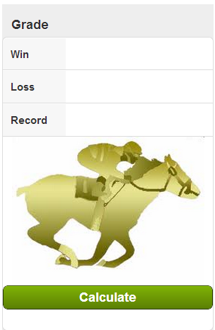

Welcome to Horse Grade GitHub Page.
Horse Grade is an app which will compare winning times against track record and will grade performance. The closest to 100% or greater, the better the performance. You can test app by clicking the link. Click Here
Design
This was made using Sencha Architect and was developed just for fun.
Notes
The formula used is Record/(Win+ (Loss * 1/5))*100
Record - Track record for distance race
Win - Winning Time of race
Loss - Length loss by (note: if horse won this is left blank)
Support or Contact
Having trouble with Pages? Check out the documentation at http://help.github.com/pages or contact support@github.com and we’ll help you sort it out.